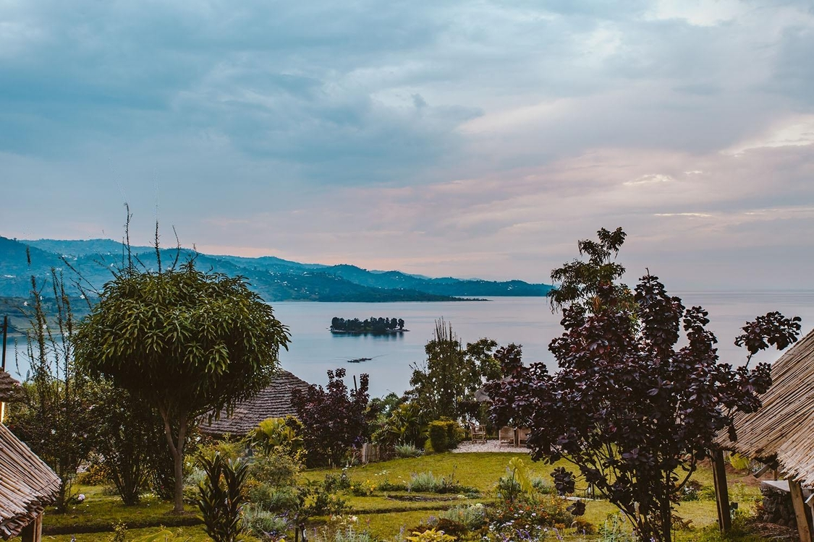
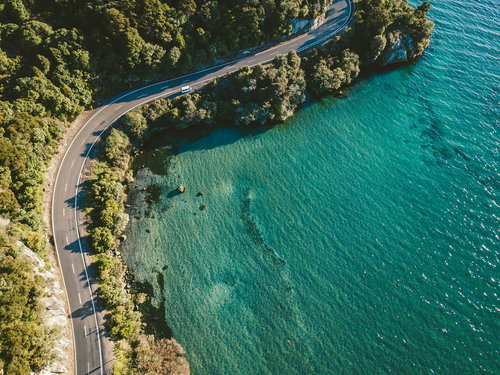

These are fishermen from a place called Braserie. They work really hard to make sure the town and the city has enough fish and proteins from Lake Kivu. The lake has great fish like tilapia and I enjoy hanging out during early mornings whenever I came in with my parents and close family members for an early morning swim.
This a picture of my two young brothers having fun with my two elder sisters at one of my sisters house. We love spending time together as a family despite me being abroad for school .
This is an overhead view of Gisenyi town from a lookout point. The rolling green hills and red-roofed neighborhoods spread out around by Lake Kivu
This is a beautiful panoramic view of the calm, blue waters of Lake Kivu in Gisenyi. Palm trees sway in the foreground with green hills rising in the background. It's a relaxing scene.
This is the public road close heading to Rutriro district from Gisenyi. This road is mostly travelled by cyclists in Tournaments like Tour du Rwanda and hiking amateurs since the country is full of hills. It offers beautiful views of Lake Kivu and the sounds of birds and Bats flying 10 feet above in the palm trees is an incredible Experiences